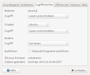
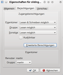
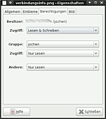
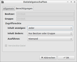

Dateimanager
Dieser Artikel wurde für die folgenden Ubuntu-Versionen getestet:
Dieser Artikel ist größtenteils für alle Ubuntu-Versionen gültig.
Zum Verständnis dieses Artikels sind folgende Seiten hilfreich:
Linux-Dateisysteme besitzen standardmäßig ein Rechtesystem, welches die Rechte pro Dateien und Verzeichnissen festlegt [1]. Zum Ändern dieser Rechte können entweder die Terminal-Befehle chmod, chown sowie chgrp oder aber die Standard-Dateimanager Nautilus (Ubuntu/Ubuntu GNOME), Dolphin (Kubuntu), Caja (Ubuntu MATE), Thunar (Xubuntu) und PCManFM (Lubuntu) verwendet werden.
Prinzipiell können Benutzer immer nur die Dateirechte solcher Dateien ändern, deren Besitzer sie selbst sind. Sollen Rechte von Dateien anderer Benutzer oder von Systemdateien verändert werden, so sind dafür stets Root-Rechte [2] erforderlich.
Achtung!
Auch wenn es grundsätzlich möglich ist, sollten Dateimanager nicht mit Root-Rechten gestartet werden, weil damit die Möglichkeit besteht, sämtliche Systemeinstellungen zu ändern, was ein Sicherheits- und Stabilitätsrisiko darstellt.
Sollen Rechte von Systemdateien oder anderen Nutzern geändert werden, dann greift man vorzugsweise auf die entsprechenden Terminal-Befehle zurück, die dann Root-Rechte ausschließlich für die beabsichtigte Aktion gewähren.
Wer trotzdem den Dateimanager für das Ändern von Rechten andere Benutzer oder Systemdateien verwenden will, muss diesen mit gksudo bzw. kdesudo (KDE) starten [2].
| Desktop-Umgebung | |||||
| Unity/GNOME 3 | KDE | Xfce | LXDE | MATE | |
| Befehl | gksudo nautilus | kdesudo dolphin | gksudo thunar | gksudo pcmanfm | gksudo caja |
Hinweis:
Für das Programm gksudo muss ab Ubuntu 13.10 zuerst das Paket gksu installiert werden.
Dies nur als kurzer Hinweis zu Benutzerrechten. Einsteiger sollten sich zuerst in die Grundlagen von sudo und Dateirechten einlesen.
Nautilus/GNOME¶

Unter Nautilus kann man die Dateirechte ansehen, in dem man mit der rechten Maustaste  auf eine Datei klickt und dann "Eigenschaften -> Zugriffsrechte" auswählt. Sofern man Besitzer der Datei ist, kann man hier bequem über die Auswahl-Menüs die Rechte für "Besitzer", "Gruppe" und "Andere" auswählen sowie die Gruppe ändern. Setzt man den Haken bei "Datei als Programm ausführen", so ist die Datei als ausführbar gekennzeichnet.
auf eine Datei klickt und dann "Eigenschaften -> Zugriffsrechte" auswählt. Sofern man Besitzer der Datei ist, kann man hier bequem über die Auswahl-Menüs die Rechte für "Besitzer", "Gruppe" und "Andere" auswählen sowie die Gruppe ändern. Setzt man den Haken bei "Datei als Programm ausführen", so ist die Datei als ausführbar gekennzeichnet.
Das Setzen der Sonderrechte UID, GID und Sticky-Bit ist bei Nautilus erst möglich, wenn man die "erweiterte Rechtedarstellung" wählt. Dafür startet man am besten den Konfigurationseditor und aktiviert dort den Schlüssel "/org/gnome/nautilus/preferences/show_advanced_permissions".
Es ist nur eingeschränkt möglich, Rechte für ganze Ordner rekursiv zu ändern.
Dolphin/KDE Plasma¶
 Mit Dolphin (und auch Konqueror sowie der KDE-Arbeitsfläche) kann man die Dateirechte ansehen, in dem man das Kontextmenü der Datei öffnet und dann "Eigenschaften -> Berechtigungen" auswählt. Die Eigenschaften können für eine ausgewählte Datei alternativ auch über das Tastenkürzel Alt + ⏎ geöffnet werden. Sofern man Besitzer der Datei ist, kann man hier bequem über die Auswahl-Menüs die Rechte für "Eigentümer", "Gruppe" und "Sonstige" auswählen sowie die Gruppe ändern. Setzt man den Haken bei "Ausführbar", so ist die Datei als ausführbar gekennzeichnet.
Über die Schaltfläche "Erweiterte Berechtigungen" kann die komplette Rechtematrix geöffnet werden und somit auch die Sonderrechte UID, GID und Sticky-Bit bearbeitet werden.
Caja/MATE¶
Da der Dateimanager Caja auf eine ältere Version von Nautilus aufbaut, gilt auch hier das bereits beschriebene Verhalten. Praktisch also mit eine Datei und dann "Eigenschaften -> Zugriffsrechte" auswählen. Um bei Caja die oben genannten Sonderrechte bzw. die "erweiterte Rechtedarstellung" zu konfigurieren, startet man den Konfigurationseditor, aktiviert aber einen anderen Schlüssel: "/org/mate/caja/preferences/show_advanced_permissions".
Thunar/Xfce¶

Mit Thunar kann man sich die Dateirechte anzeigen lassen, in dem man mit der rechten Maustaste auf eine Datei klickt und dann "Eigenschaften -> Berechtigungen" auswählt. Ist man der Besitzer der Datei, so lassen sich nun die Dateirechte
Keine
Nur Lesen
Nur Schreiben
Lesen und Schreiben
für "Besitzer", "Gruppe" und "Andere" sowie die Gruppenzugehörigkeit der Datei ändern.
Das Markieren einer Datei als ausführbar ist nur bei bestimmten Dateien, z. B. Shell-Skripten mit der Endung .sh oder ELF-Programmen, möglich. Das Setzen der Sonderrechte UID, GID und Sticky-Bit ist aus Thunar heraus nicht möglich.

 Programmübersicht
Programmübersicht- Erstellt mit Inyoka
-
 2004 – 2017 ubuntuusers.de • Einige Rechte vorbehalten
2004 – 2017 ubuntuusers.de • Einige Rechte vorbehalten
Lizenz • Kontakt • Datenschutz • Impressum • Serverstatus -
Serverhousing gespendet von